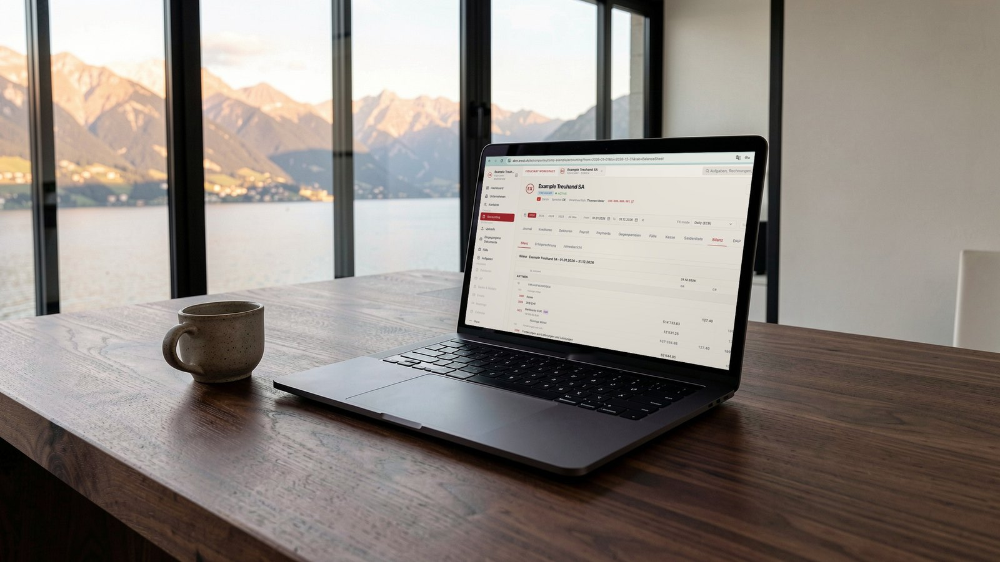

The bookkeeping machine you don’t buy
We don't sell software or hardware, and we don't take the work away from your accountant. We put an Arvut computer on their desk: on it, ABM, our AI agents and your folders, updated every day. Nothing to learn. No external IT needed.
Owned by Arvut, works at your desk. Documents into the folder, «process» – bank, receipts and VAT come back prepared. The mandates stay yours.
All of this costs money, and none of it appears on the price list of any accounting software.
For your accountant, your CFO, the person who looks after receivables and payables. On it:
Books, receivables and payables ledgers, bank, documents. The assistant Vera answers from the books.
Documents arrive by themselves from the client's computer.
They work with files and folders right on this computer and with the books in ABM: post a bank statement, issue invoices, file documents, prepare the return.
The computer remains Arvut's property: we maintain it, update it and replace it when needed. Remotely, only with your consent; we do not see the screen or your accountant's work.
Updated practically every day, with no call to IT. What changes are the skills; accounting rules and VAT rates follow the law, not the version. Every version is kept, the previous one can be restored.
Books and documents live in ABM, with copies in several independent places. An export of your books as a file, on first request, including if you leave.
Nothing to learn. No new software, no AI tools. No external specialists to bring in for setup and support. Everything is at hand, ABM does it all.
Responsibility stays where it belongs. A doubtful document is not posted by the system: it comes back with a question. Nothing goes into the return without your “Apply”.
Our goal: financial accounting, bookkeeping and the business back office without manual work. Today these run without the accountant's hand: bank, document filing, receivables and payables ledgers, QR-bills, VAT. What stays manual is control, doubtful documents and the signature: the part that requires your professional judgement. The full list: arvut.ch/automation.
Two monitors on the accountant's desk: the payroll sheet on one, the accounting program on the other. The accountant reads the figures off one screen and types them into the other. They are modules of the same program. “Why not import?” – “You have to call the IT specialist. He's expensive. This way is cheaper.”
A clerk is already entering May's data. Then it turns out the IT specialist forgot to enter the new quarterly rate. Everything has to be re-entered.
The CFO has prepared the reports. The owner brings more invoices, backdated. Every report is broken, everything has to be redone.
On the AWC these scenes don't happen. Data comes in automatically. The rate is fetched by itself, the official one, for the right date. A backdated invoice is posted by the system and the report is recalculated in seconds: reports are built from the books, not by hand in Excel.
Warehouse and inventory management · cash registers and POS · automatic reminders to debtors · ERP based on EspoCRM. Each item becomes a line in the contract.
What is automated today, what can be automated and what stays with people, on one page: arvut.ch/automation.
Binders and the basement archive are no longer working tools: the work is done with the digital copy attached to the entry. What must be kept in the original is decided by the law, not by habit.
The office becomes a choice, not a necessity: with the AWC the accountant works wherever suits them, and the books reconcile every morning.

We put the AWC next to your accountant and take one of your mandates in parallel with your books. Nothing changes for the client.
An hour of onboarding, ABM Courier for your clients, access under your brand.
You check and sign under your own name. The mandates are yours, the brand is yours, you set the price for your client.
The station has no separate price. You pay by the tariff for fiduciaries — for entries that reconcile with the bank.
Or a single line in reply to our letter.